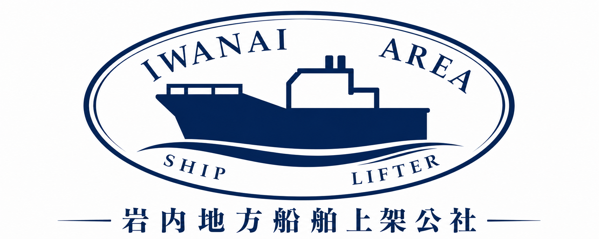

This guide explains how to use the facility for pleasure boats.
Please contact us in advance with your preferred date, boat details, and intended use.
We will confirm the schedule, type of use, facility conditions, and applicable fees.
On the scheduled day, please carry out the haul-out or launching operation yourself while following all safety instructions.
You may use the water facilities for hull washing and basic maintenance work during your visit.
A lift system for hauling pleasure boats in and out of the water.
Water is available for hull washing and maintenance work.
A work area is available for inspection, cleaning and light maintenance.
Dry storage is available for boats under an annual contract.
Yes. Please contact us before using the facility.
No. Haul-out and launching operations must be carried out by the boat owner or user.
Yes. Water facilities are available for hull washing and maintenance work.
Please contact us in advance regarding availability.